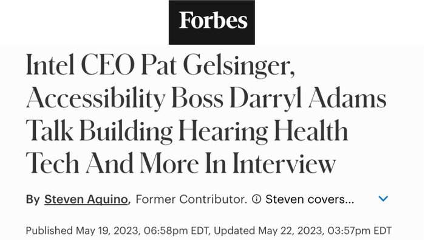

"Most people don't associate Intel with accessibility. They should."
Read the article →
Featured Work
Intel Corporation
Senior Corporate Communications & PR Manager, Global Corporate Communications
Intel had a long and genuine commitment to global corporate responsibility and using technology as a force for good, but the depth of that commitment had yet to be told.
I built the overarching communications strategy that connected Intel's global corporate responsibility work to a clear, compelling narrative about technology as a force for good. Using the CSR Report, accessibility initiatives, and education investments as proof points, I identified and told the stories of how Intel's products and initiatives were advancing its mission for social impact, finding the human angle in each one that made the work resonate and gave Intel's purpose visibility.
This work strengthened Intel's reputation as a purpose-driven company and demonstrated the company's genuine commitment to its mission, building lasting brand credibility and deepening trust with key audiences.
Targeted Earned Coverage

"Most people don't associate Intel with accessibility. They should."
Read the article →
Owned Content & Channels